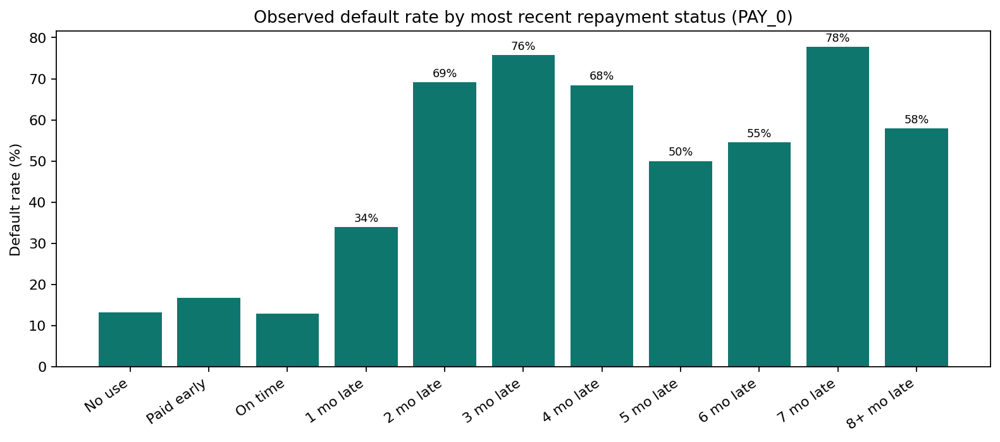
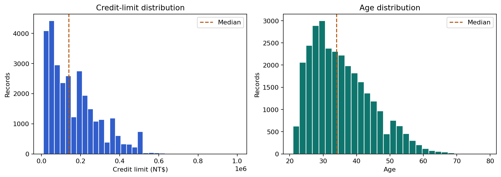

What EDA means
Exploratory data analysis (EDA) is careful looking before modelling. A spreadsheet can hide empty values, duplicated rows, impossible codes, one rare target class, strange ranges, and relationships worth investigating. EDA does not prove cause and effect. It gives evidence for questions and safeguards for later steps.
Checks performed
| Question | Observed result | What it changed |
|---|---|---|
| Are values missing? | No null cells in the supplied CSV. | The pipeline still includes imputers so prediction inputs are handled consistently. |
| Are rows/IDs duplicated? | No duplicate complete rows or IDs. | No duplicate-removal step is needed for this supplied file. |
| Is the target balanced? | 22.12% default, 77.88% no default. | Accuracy alone would be misleading; use ROC-AUC, average precision, F1, recall, and threshold analysis. |
| Which raw variables move with default? | PAY_0 has the largest absolute Pearson correlation, 0.3248; PAY_2 is 0.2636. LIMIT_BAL is −0.1535. | Recent repayment behaviour deserves careful attention and motivates past-only history features. |

PAY_0. In the supplied data, codes 2 and 3 have observed default rates around 69.14% and 75.78%. This is association, not a rule to apply blindly.
Reading common charts
A mean is the arithmetic average. A median is the middle value after sorting. A median is less pulled by extreme values. Variance and standard deviation describe spread. A histogram shows how often ranges occur. A box plot shows a median, middle spread, and potential outliers. A correlation heatmap shows linear associations, where +1 means a perfect same-direction line, 0 means no linear relationship, and −1 means opposite directions.
Outliers are unusual values, not automatically mistakes. A very high credit limit may be a genuine client. The active code does not delete or cap outliers. Standard scaling is used for numerical modelling, and tree models are generally less sensitive to scale.
What EDA did not do
The project can show that observed late-payment codes are associated with default in this dataset. It cannot claim that the original developer made every later modelling decision because of this plot, nor can it claim a payment status causes default. Documentation calls this an evidence-based rationale, not a reconstructed intention.
Reproduce the figures
python -m src.credit_risk.showcase
This command reads the active CSV and model metadata, then writes aggregate-only public visuals to static/project-assets/. It does not expose individual client rows on the public project page.
Why is correlation not a feature-importance ranking?
Correlation looks at one raw variable and a linear relationship. A trained model can use nonlinear patterns and combinations. The project also creates SHAP explanations after training for model-based interpretation.